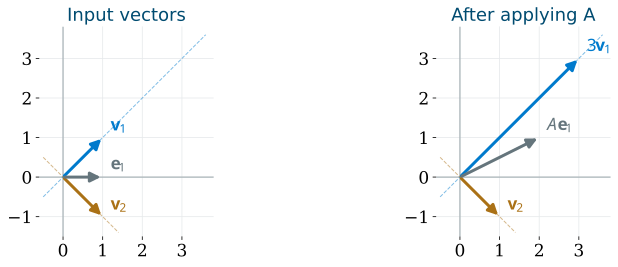
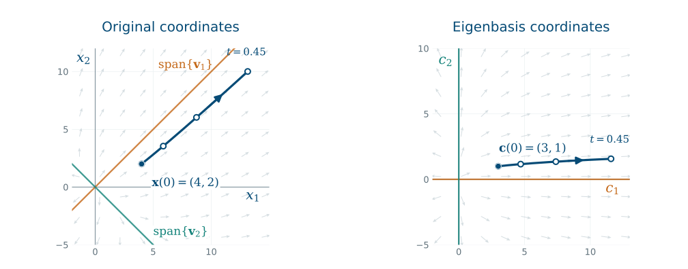

Eigenvalues and Eigenvectors
Anton, Rorres, & Kaul Ch. 5
Assignment 6 due November 23
Quiz 5 · December 1
November 23, 2026
Choose directions that turn a matrix action into separate scalar actions
\(\mat{A}\mat{V}=\mat{V}\mat{D},\qquad \mat{A}\vct{x}=\mat{V}\mat{D}\vct{c}\xleftarrow{\mat{A}}\vct{x}=\mat{V}\vct{c}\)
Which lines through the origin does a matrix send into themselves?
For a square matrix \(\mat{A}\), an eigenvector is a nonzero vector \(\vct{v}\) satisfying
\[ \mat{A}\vct{v}=\lambda\vct{v},\qquad \vct{v}\ne\vct{0} \]
The scalar \(\lambda\) is its eigenvalue
\[\begin{equation*} \mat{A}\operatorname{span}\{\vct{v}\}\subseteq\operatorname{span}\{\vct{v}\}, \qquad \text{equality when }\lambda\ne0 \end{equation*}\]
The line is preserved as a subspace; its vectors may stretch, reverse, or collapse
\[ \mat{A}=\begin{bmatrix}2&1\\1&2\end{bmatrix},\qquad \vct{v}_1=\begin{bmatrix}1\\1\end{bmatrix},\quad \vct{v}_2=\begin{bmatrix}1\\-1\end{bmatrix} \]

\[ \mat{A}\vct{v}_1=3\vct{v}_1,\qquad \mat{A}\vct{v}_2=\vct{v}_2 \]
The standard axes mix; the two diagonal directions act independently
For a real eigenvalue and its eigenvector:
| Eigenvalue | Action on that vector |
|---|---|
| \(\lambda>1\) | stretch in the same direction |
| \(0<\lambda<1\) | shrink in the same direction |
| \(\lambda=1\) | leave fixed |
| \(\lambda<0\) | reverse direction and scale length by \(|\lambda|\) |
| \(\lambda=0\) | send to zero |
For a square matrix,
\[ 0\text{ is an eigenvalue}\iff\operatorname{null}(\mat{A})\ne\{\vct{0}\} \iff\mat{A}\text{ is singular} \]
The scale factor belongs to a direction; it need not describe every vector
\(\exstar\) Find eigenvalues and describe their eigendirections geometrically Reflection \(\mat{H}=\begin{bmatrix}1&0\\0&-1\end{bmatrix}\) Projection \(\mat{J}=\begin{bmatrix}1&0\\0&0\end{bmatrix}\) Scaling \(\mat{S}=2\mat{I}_2\): which nonzero vectors are eigenvectors? For the preceding \(\mat{A}=\begin{bmatrix}2&1\\1&2\end{bmatrix}\), is \([2,1]^\top\) an eigenvector?
Turn the preserved-direction question into a homogeneous system
For \(\mat{A}\in\reals^{n\times n}\) and \(\vct{v}\ne\vct{0}\):
\[ \mat{A}\vct{v}=\lambda\vct{v} \iff(\mat{A}-\lambda\mat{I}_n)\vct{v}=\vct{0} \iff\vct{0}\ne\vct{v}\in\nullspace(\mat{A}-\lambda\mat{I}_n) \]
A nonzero solution exists exactly when the shifted matrix is singular:
\[ \det(\mat{A}-\lambda\mat{I}_n)=0 \]
Define the characteristic polynomial
\[ p_{\mat{A}}(\lambda)=\det(\lambda\mat{I}_n-\mat{A}) \]
Some sources use \(\det(\mat{A}-\lambda\mat{I}_n)\) — the same roots and multiplicities
First solve the scalar polynomial equation; then solve a homogeneous system for each root
Return to \(\mat{A}=\begin{bmatrix}2&1\\1&2\end{bmatrix}\)
\[ p_{\mat{A}}(\lambda) =\det\begin{bmatrix}\lambda-2&-1\\-1&\lambda-2\end{bmatrix} =(\lambda-2)^2-1=(\lambda-3)(\lambda-1) \]
For each eigenvalue, solve a different homogeneous system:
| \(\lambda\) | \(\mat{A}-\lambda\mat{I}\) | Solution condition | Eigenspace basis |
|---|---|---|---|
| \(3\) | \(\begin{bmatrix}-1&1\\1&-1\end{bmatrix}\) | \(v_2=v_1\) | \(\{[1,1]^\top\}\) |
| \(1\) | \(\begin{bmatrix}1&1\\1&1\end{bmatrix}\) | \(v_2=-v_1\) | \(\{[1,-1]^\top\}\) |
The determinant finds the scale factors; null spaces find their directions
For an eigenvalue \(\lambda\), its eigenspace is
\[ E_\lambda=\operatorname{null}(\mat{A}-\lambda\mat{I}) \]
By rank–nullity,
\[ \dim(E_\lambda)=n-\operatorname{rank}(\mat{A}-\lambda\mat{I})\ge1 \]
Eigenvectors exclude zero; the eigenspace includes zero
The inertia tensor \(\mat{J}=\mat{J}^\top\in\reals^{3\times3}\) describes rotational inertia about the center of mass
\[\begin{equation*} \mat{J}\vct{v}_j=I_j\vct{v}_j,\qquad 0<I_1<I_2<I_3 \end{equation*}\]
| Axis through the center of mass | Moment | Rotation without external torque |
|---|---|---|
| Along the handle | Smallest | Stable |
| Across the racket, in its plane | Intermediate | Unstable |
| Perpendicular to the racket face | Largest | Stable |
Rotation about the intermediate axis is possible, but small disturbances grow and make the racket tumble
Perfect spin about any principal axis is possible — test it with a tiny wobble
Let \(\vct{u}\) contain the two small angular-velocity components perpendicular to the spin axis
The linear approximation uses a different matrix, \(\mat{B}\)
\[ \vct{u}'=\mat{B}\vct{u},\qquad \mat{B}\vct{w}=\mu\vct{w} \implies \vct{u}(t)=e^{\mu t}\vct{w} \]
| Steady spin axis | Wobble eigenvalues | Effect of a small disturbance |
|---|---|---|
| Smallest or largest moment | \(\pm\sqrt{-1}\,\nu\) | Oscillation; wobble stays small |
| Intermediate moment | \(\pm\sigma\) | A growing component; onset of tumbling |
\(\nu,\sigma>0\) — imaginary rates oscillate; a positive real rate grows initially
Inertia eigenvalues are principal moments; wobble eigenvalues govern growth or oscillation
\[ \mat{B}=\begin{bmatrix}4&1\\0&2\end{bmatrix} \]
\(\exstar\) Use determinants, homogeneous systems, and direct multiplication Find the characteristic polynomial and both eigenvalues Find a basis for each eigenspace Check \(\mat{B}\vct{v}=\lambda\vct{v}\) for each chosen basis vector Does \(\vct{e}_2\) have to be an eigenvector because \(\mat{B}\) is triangular?
Count all \(n\) eigenvalues with algebraic multiplicity, allowing complex roots
\[ \operatorname{tr}(\mat{A})=\sum_{j=1}^n\lambda_j, \qquad \det(\mat{A})=\prod_{j=1}^n\lambda_j \]
For \(\mat{A}=\begin{bmatrix}2&1\\1&2\end{bmatrix}\): \(\quad3+1=4\), \(\quad3\cdot1=3\)
For any triangular matrix, the characteristic determinant is a product:
\[ p_{\mat{U}}(\lambda)=\prod_{j=1}^n(\lambda-u_{jj}) \]
Triangular eigenvalues are the diagonal entries; trace and determinant are checks, not a general eigensolver
Hand calculations reveal the ideas; software handles practical matrix sizes
numpy.linalg.eig(A); for real symmetric matrices, numpy.linalg.eigh(A)For a computed eigenpair, check
\[\begin{equation*} \mat{A}\widehat{\vct{v}}\approx\widehat{\lambda}\widehat{\vct{v}}, \qquad \widehat{\vct{v}}\ne\vct{0} \end{equation*}\]
Understand the eigenvalue equation and interpret the directions; let software do the larger computations
When do preserved directions provide enough coordinates for every vector?
For the ordered eigenbasis \(\mathcal{V}=\{\vct{v}_1,\ldots,\vct{v}_n\}\), match each column to its eigenvalue
\[ \mat{V}=[\vct{v}_1\ \cdots\ \vct{v}_n],\qquad \mat{D}=\operatorname{diag}(\lambda_1,\ldots,\lambda_n) \]
Multiplication by columns gives
\[ \mat{A}\mat{V}=[\lambda_1\vct{v}_1\ \cdots\ \lambda_n\vct{v}_n] =\mat{V}\mat{D} \]
Independence makes \(\mat{V}\) invertible:
\[ \boxed{\mat{V}^{-1}\mat{A}\mat{V}=\mat{D}},\qquad \mat{A}=\mat{V}\mat{D}\mat{V}^{-1} \]
\(\mat{A}\) is diagonalizable over the chosen field exactly when it has an eigenvector basis there
For \(\mat{A}=\begin{bmatrix}2&1\\1&2\end{bmatrix}\), choose
\[ \mat{V}=\begin{bmatrix}1&1\\1&-1\end{bmatrix},\qquad \mat{V}^{-1}=\tfrac12\begin{bmatrix}1&1\\1&-1\end{bmatrix},\qquad \mat{D}=\begin{bmatrix}3&0\\0&1\end{bmatrix} \]
For \(\vct{x}=[4,2]^\top\), write \(\vct{c}=[\vct{x}]_{\mathcal{V}}=\mat{V}^{-1}\vct{x}\)
\[ \mat{A}\vct{x}=\begin{bmatrix}10\\8\end{bmatrix} \quad\xleftarrow{\mat{V}}\quad \underbrace{\begin{bmatrix}9\\1\end{bmatrix}}_{[\mat{A}\vct{x}]_{\mathcal{V}}} \quad\xleftarrow{\mat{D}}\quad \underbrace{\begin{bmatrix}3\\1\end{bmatrix}}_{[\vct{x}]_{\mathcal{V}}} \]
Read coordinates, scale them separately, then reconstruct the output
Use the inverse basis matrix as in Bases and Coordinates
Eigenbasis coordinates \([\vct{x}]_{\mathcal{V}}=\vct{c}=\begin{bmatrix}c_1\\\vdots\\c_n\end{bmatrix}\)
Vector \(\displaystyle\vct{x}=\sum_{j=1}^n c_j\vct{v}_j\) \(\vct{x}=\mat{V}\vct{c}\)
Apply \(\mat{A}\) to the vector or \(\mat{D}\) to its eigenbasis coordinates
\[ \mat{A}\vct{x}=\mat{A}(\mat{V}\vct{c})=\mat{V}(\mat{D}\vct{c}), \qquad [\mat{A}\vct{x}]_{\mathcal{V}}=\mat{D}[\vct{x}]_{\mathcal{V}} \]
\(\mat{V}^{-1}\) reads the coordinates; \(\mat{D}\) scales them separately
The operator is unchanged; the new coordinates separate its scalar actions
Use an eigenbasis whose vectors are not perpendicular:
\[ \mat{B}=\begin{bmatrix}4&1\\0&2\end{bmatrix},\qquad \mat{V}=\begin{bmatrix}1&1\\0&-2\end{bmatrix},\qquad \mat{D}=\begin{bmatrix}4&0\\0&2\end{bmatrix} \]
\(\mat{B}\mat{V}=\mat{V}\mat{D}\); start with \(\vct{x}=[3,-2]^\top\)
Eigenbasis coordinates \([\vct{x}]_{\mathcal{V}}=\vct{c}=\begin{bmatrix}2\\1\end{bmatrix}\)
Vector \(\vct{x}=\mat{V}\vct{c}=\begin{bmatrix}3\\-2\end{bmatrix}\)
Coordinates after the action \([\mat{B}\vct{x}]_{\mathcal{V}}=\mat{D}\vct{c}=\begin{bmatrix}8\\2\end{bmatrix}\)
Output vector \(\mat{B}\vct{x}=\mat{V}\mat{D}\vct{c}=\begin{bmatrix}10\\-4\end{bmatrix}\)
Across then down equals down then across: \(\mat{B}(\mat{V}\vct{c})=\mat{V}(\mat{D}\vct{c})\)
Use the same \(\mat{B},\mat{V},\mat{D}\), now with \(\vct{x}=[1,2]^\top\)
Find these coordinates \(\vct{c}=[\vct{x}]_{\mathcal{V}}=\begin{bmatrix}c_1\\c_2\end{bmatrix}\)
Given vector \(\vct{x}=\begin{bmatrix}1\\2\end{bmatrix}\)
\(\exstar\) Complete the coordinate route Find \(\vct{c}\) and write \(\vct{x}=c_1\vct{v}_1+c_2\vct{v}_2\) Use \(\mat{D}\vct{c}\) to find \([\mat{B}\vct{x}]_{\mathcal{V}}\), then reconstruct \(\mat{B}\vct{x}\) and check by direct multiplication Compute \(\mat{D}\vct{x}\); does it equal \(\mat{B}\vct{x}\)? Which coordinate column should \(\mat{D}\) act on?
Eigenvectors belonging to distinct eigenvalues are linearly independent
For two eigenvectors, suppose \(c_1\vct{v}_1+c_2\vct{v}_2=\vct{0}\)
Apply \(\mat{A}\), then substitute \(c_2\vct{v}_2=-c_1\vct{v}_1\) from the original relation
\[\begin{align*} \vct{0}&=c_1\lambda_1\vct{v}_1+\lambda_2(c_2\vct{v}_2)\\ &=c_1\lambda_1\vct{v}_1-\lambda_2 c_1\vct{v}_1\\ &=c_1(\lambda_1-\lambda_2)\vct{v}_1 \end{align*}\]
Since \(\lambda_1\ne\lambda_2\) and \(\vct{v}_1\ne\vct{0}\), \(c_1=0\), then \(c_2=0\)
For \(k\) eigenvectors, eliminate the last term as above and apply induction to the first \(k-1\)
An \(n\times n\) matrix with \(n\) distinct eigenvalues in the chosen field is diagonalizable there
Two matrices with the same characteristic polynomial \((\lambda-2)^2\):
\[ \mat{S}=\begin{bmatrix}2&0\\0&2\end{bmatrix} \]
\(\mat{S}-2\mat{I}=\mat{0}\)
\(E_2=\reals^2\): two independent eigenvectors
Diagonalizable
\[ \mat{J}=\begin{bmatrix}2&1\\0&2\end{bmatrix} \]
\(\mat{J}-2\mat{I}=\begin{bmatrix}0&1\\0&0\end{bmatrix}\)
\(E_2=\operatorname{span}\{\vct{e}_1\}\): only one independent eigenvector
Not diagonalizable
Repeated roots permit diagonalization, but do not guarantee enough eigenvectors
For each eigenvalue \(\lambda\):
| Multiplicity | What it counts |
|---|---|
| Algebraic, \(a_\lambda\) | repetitions of the root in \(p_{\mat{A}}\) |
| Geometric, \(g_\lambda\) | \(\dim(E_\lambda)\): independent eigenvectors available |
\[ 1\le g_\lambda\le a_\lambda \]
Over a field in which \(p_{\mat{A}}\) splits into linear factors:
\[ \mat{A}\text{ diagonalizable} \iff\sum_{\text{distinct }\lambda}g_\lambda=n \iff g_\lambda=a_\lambda\text{ for every }\lambda \]
Collect a basis of each eigenspace; diagonalization needs \(n\) independent columns altogether
For a square matrix over the chosen field:
If the characteristic polynomial does not split in the field, diagonalization there is impossible
Verification by \(\mat{A}\mat{V}=\mat{V}\mat{D}\) avoids computing an inverse
\[ \mat{B}=\begin{bmatrix}4&1\\0&2\end{bmatrix},\qquad \mat{C}=\begin{bmatrix}2&0&0\\0&2&0\\0&0&3\end{bmatrix} \]
\(\exstar\) Build and verify eigenvector bases Use the eigenspaces already found for \(\mat{B}\) to construct \(\mat{V},\mat{D}\); verify \(\mat{B}\mat{V}=\mat{V}\mat{D}\) For \(\mat{C}\), give both multiplicities for each eigenvalue and construct an eigenvector basis Explain why \(\mat{C}\) disproves “diagonalizable means all eigenvalues are distinct”
\[ \mat{F}=\begin{bmatrix}2&1&0\\0&2&0\\0&0&3\end{bmatrix} \]
\(\exstar\) The diagonal entries give eigenvalues 2 and 3 Find the algebraic multiplicity and an eigenspace basis for each How many independent eigenvectors are available altogether? Can a different choice of vectors inside those same eigenspaces produce an eigenvector basis?
Optional enrichment; may be skipped
Let \(\lambda\) be a characteristic root of algebraic multiplicity \(k\)
Its generalized eigenspace is
\[ G_\lambda=\nullspace\bigl((\mat{A}-\lambda\mat{I}_n)^k\bigr),\qquad E_\lambda=\nullspace(\mat{A}-\lambda\mat{I}_n)\subseteq G_\lambda \]
A generalized eigenvector is any nonzero vector in \(G_\lambda\)
Ordinary eigenvectors are included; a new direction lies in \(G_\lambda\setminus E_\lambda\)
A length-two chain satisfies
\[ (\mat{A}-\lambda\mat{I})\vct{v}=\vct{0},\qquad (\mat{A}-\lambda\mat{I})\vct{w}=\vct{v}\ne\vct{0} \]
\(\mat{A}\vct{v}=\lambda\vct{v}\), but \(\mat{A}\vct{w}=\lambda\vct{w}+\vct{v}\)
The second direction feeds into the first instead of scaling independently
Return to the matrix with only one independent eigenvector:
\[ \mat{J}=\begin{bmatrix}2&1\\0&2\end{bmatrix},\qquad \vct{v}=\begin{bmatrix}1\\0\end{bmatrix},\quad \vct{w}=\begin{bmatrix}0\\1\end{bmatrix} \]
\[ (\mat{J}-2\mat{I})\vct{v}=\vct{0},\qquad (\mat{J}-2\mat{I})\vct{w}=\vct{v},\qquad (\mat{J}-2\mat{I})^2\vct{w}=\vct{0} \]
The two vectors form a basis \(\mat{G}=[\vct{v}\ \vct{w}]\), with
\[ \mat{J}\mat{G} =\mat{G}\underbrace{\begin{bmatrix}2&1\\0&2\end{bmatrix}}_{\text{Jordan block}} \]
The missing eigenvector is replaced by a generalized eigenvector
The off-diagonal \(1\) records the coupling; the matrix is still not diagonalizable
For \(\mat{A}\in\reals^{n\times n}\), suppose all characteristic roots are real, with distinct roots \(\lambda_1,\ldots,\lambda_s\) and algebraic multiplicities \(k_1,\ldots,k_s\)
\[ G_{\lambda_j}=\nullspace\bigl((\mat{A}-\lambda_j\mat{I}_n)^{k_j}\bigr), \qquad\dim G_{\lambda_j}=k_j,\qquad\sum_{j=1}^s k_j=n \]
Choose a basis of each \(G_{\lambda_j}\) and combine the lists
The result is \(n\) independent generalized eigenvectors \(\vct{g}_1,\ldots,\vct{g}_n\):
\[ \boxed{\operatorname{span}\{\vct{g}_1,\ldots,\vct{g}_n\}=\reals^n} \]
A generalized eigenvector basis gives coordinates even when an ordinary eigenvector basis is missing
With nonreal roots, work over \(\mathbb{C}\) instead: the span is \(\mathbb{C}^n\)
Matrices \(\mat{A}\) and \(\mat{B}\) are similar when
\[ \mat{B}=\mat{P}^{-1}\mat{A}\mat{P},\qquad\mat{P}\text{ invertible} \]
Their characteristic polynomials agree:
\[ \det(\lambda\mat{I}-\mat{B}) =\det\bigl(\mat{P}^{-1}(\lambda\mat{I}-\mat{A})\mat{P}\bigr) =\det(\lambda\mat{I}-\mat{A}) \]
Diagonalization is similarity to a diagonal matrix; ordinary row reduction is a different operation
A real matrix may need complex coordinates to reveal its eigenvectors
\[ \mat{R}=\begin{bmatrix}0&-1\\1&0\end{bmatrix},\qquad \mat{R}\begin{bmatrix}x\\y\end{bmatrix}=\begin{bmatrix}-y\\x\end{bmatrix} \]
Every nonzero real vector turns through \(90^\circ\); none stays on its line
\[ p_{\mat{R}}(\lambda)=\lambda^2+1 \]
Always name the scalar field when deciding whether an eigenvector basis exists
For the quarter-turn matrix, direct multiplication gives
\[ \mat{R}\begin{bmatrix}1\\-i\end{bmatrix} =\begin{bmatrix}i\\1\end{bmatrix} =i\begin{bmatrix}1\\-i\end{bmatrix},\qquad \mat{R}\begin{bmatrix}1\\i\end{bmatrix} =\begin{bmatrix}-i\\1\end{bmatrix} =-i\begin{bmatrix}1\\i\end{bmatrix} \]
Thus, over \(\mathbb{C}\),
\[ \mat{V}=\begin{bmatrix}1&1\\-i&i\end{bmatrix},\qquad \mat{D}=\begin{bmatrix}i&0\\0&-i\end{bmatrix},\qquad \mat{R}=\mat{V}\mat{D}\mat{V}^{-1} \]
For real \(x,y\):
\[ \begin{bmatrix}x\\y\end{bmatrix} =\frac{x+iy}{2}\begin{bmatrix}1\\-i\end{bmatrix} +\frac{x-iy}{2}\begin{bmatrix}1\\i\end{bmatrix} \]
Conjugate coefficients and eigenvectors reconstruct a real vector
If \(\mat{A}\) has real entries and \(\mat{A}\vct{v}=\lambda\vct{v}\), conjugate both sides:
\[ \mat{A}\overline{\vct{v}}=\overline{\lambda}\,\overline{\vct{v}} \]
Nonreal eigenvalues and their eigenvectors occur in conjugate pairs
For \(\lambda=a+ib\), \(\vct{v}=\vct{p}+i\vct{q}\), equate real and imaginary parts:
\[ \mat{A}\vct{p}=a\vct{p}-b\vct{q},\qquad \mat{A}\vct{q}=b\vct{p}+a\vct{q} \]
When \(b\ne0\), \(\vct{p},\vct{q}\) span a real invariant plane
A complex pair describes a real two-dimensional action, even without real eigenvectors in that plane
\[ \mat{B}=\begin{bmatrix}1&-1\\1&1\end{bmatrix} \]
\(\exstar\) Compare real geometry with complex coordinates Find the characteristic polynomial, eigenvalues, and an eigenvector for each Is \(\mat{B}\) diagonalizable over \(\reals\)? Over \(\mathbb{C}\)? Compute \(\mat{B}\vct{e}_1\) and \(\mat{B}\vct{e}_2\); identify the rotation angle and length factor
Powers and matrix functions become scalar actions in an eigenvector basis
Two-sector model from Inverses: same input matrix, a new demand forecast
\[ \mat{C}=\begin{bmatrix}0.20&0.10\\0.30&0.25\end{bmatrix},\qquad \vct{d}=\underbrace{\begin{bmatrix}74\\15\end{bmatrix}}_{\text{external demand by sector}} \]
\(c_{ij}\) — sector \(i\) input needed per unit of sector \(j\) output
Entry \(i\) refers to sector \(i\) in each vector
\[\begin{align*} \underbrace{\vct{x}}_{\text{total production by sector}} &=\underbrace{\mat{C}\vct{x}}_{\text{internal demand}} +\underbrace{\vct{d}}_{\text{external demand}}\\ (\mat{I}-\mat{C})\vct{x} &=\begin{bmatrix}0.80&-0.10\\-0.30&0.75\end{bmatrix}\vct{x} =\begin{bmatrix}74\\15\end{bmatrix} \end{align*}\]
Find production first by elimination, then explain it using an eigenvector basis
Scale the first equation by \(10\) and the second by \(20\)
\[ \left[\begin{array}{rr|r}8&-1&740\\-6&15&300\end{array}\right] \xrightarrow{\substack{R_2\leftarrow4R_2\\R_2\leftarrow R_2+3R_1}} \left[\begin{array}{rr|r}8&-1&740\\0&57&3420\end{array}\right] \]
Back substitution gives
\[\begin{align*} 57x_2=3420&\implies x_2=60\\ 8x_1-x_2=740&\implies x_1=100 \end{align*}\]
Two pivots — one unique production plan
\[ \vct{x}=\begin{bmatrix}100\\60\end{bmatrix},\qquad \underbrace{\begin{bmatrix}26\\45\end{bmatrix}}_{\mat{C}\vct{x}} +\underbrace{\begin{bmatrix}74\\15\end{bmatrix}}_{\vct{d}} =\underbrace{\begin{bmatrix}100\\60\end{bmatrix}}_{\vct{x}} \]
Scaling preserves the eigendirections; use a trial vector \(\vct{v}=[a,b]^\top\)
\[ \mat{M}=20\mat{C}=\begin{bmatrix}4&2\\6&5\end{bmatrix} \]
\[ p_{\mat{M}}(\mu)=\det(\mu\mat{I}-\mat{M}) =(\mu-4)(\mu-5)-12=(\mu-8)(\mu-1) \]
\(\mu_1=8\): \(-4a+2b=0\)
\[ \vct{v}_1=\begin{bmatrix}1\\2\end{bmatrix},\qquad \mat{C}\vct{v}_1=\frac25\vct{v}_1 \]
\(\mu_2=1\): \(3a+2b=0\)
\[ \vct{v}_2=\begin{bmatrix}2\\-3\end{bmatrix},\qquad \mat{C}\vct{v}_2=\frac1{20}\vct{v}_2 \]
The eigenvalues of \(\mat{C}\) are \(2/5=0.4\) and \(1/20=0.05\)
For each eigenpair of \(\mat{C}\),
\[ \mat{C}\vct{v}_j=\lambda_j\vct{v}_j \implies (\mat{I}-\mat{C})\vct{v}_j=(1-\lambda_j)\vct{v}_j \]
Multipliers along each eigendirection
| Direction | Internal requirements \(\mat{C}\): \(\lambda_j\) |
Net output \(\mat{I}-\mat{C}\): \(1-\lambda_j\) |
Total output \(\mat{I}\): \(1\) |
|---|---|---|---|
| \(\vct{v}_1=[1,2]^\top\) | \(2/5\) | \(3/5\) | \(1\) |
| \(\vct{v}_2=[2,-3]^\top\) | \(1/20\) | \(19/20\) | \(1\) |
Both net-output multipliers are nonzero — \(\mat{I}-\mat{C}\) is invertible
The same eigendirections describe total output, internal requirements and net output
For total output in an eigendirection,
\[ \mat{C}\vct{x}=\lambda\vct{x},\qquad \vct{d}=\vct{x}-\mat{C}\vct{x}=(1-\lambda)\vct{x} \]
\(\vct{v}_1=[1,2]^\top\) — a feasible production mix in the ratio \(1:2\)
\(\vct{v}_2=[2,-3]^\top\) — increase sector 1, decrease sector 2
Internal demand, external demand and total output are parallel in an eigendirection
Use the ordered eigenbasis \(\mathcal{V}=\{\vct{v}_1,\vct{v}_2\}\)
\[ \mat{V}=[\vct{v}_1\ \vct{v}_2] =\begin{bmatrix}1&2\\2&-3\end{bmatrix},\qquad \mat{V}^{-1}=\frac17\begin{bmatrix}3&2\\2&-1\end{bmatrix} \]
Read the coordinates, then reconstruct the same demand
\[\begin{align*} [\vct{d}]_{\mathcal{V}} &=\mat{V}^{-1}\begin{bmatrix}74\\15\end{bmatrix} =\begin{bmatrix}36\\19\end{bmatrix}\\ \vct{d}&=36\vct{v}_1+19\vct{v}_2 =[\vct{v}_1\ \vct{v}_2]\begin{bmatrix}36\\19\end{bmatrix} =\begin{bmatrix}74\\15\end{bmatrix} \end{align*}\]
The entries \(36,19\) describe demand in the eigenbasis; \(74,15\) describe sector demand
Let \(\vct{c}=[\vct{x}]_{\mathcal{V}}\) and \(\mat{D}=\operatorname{diag}(2/5,1/20)\)
\[ \mat{C}=\mat{V}\mat{D}\mat{V}^{-1},\qquad (\mat{I}-\mat{C})\mat{V}\vct{c}=\vct{d} \]
Change coordinates to separate the two equations
\[ \underbrace{\begin{bmatrix}3/5&0\\0&19/20\end{bmatrix}}_{\mat{I}-\mat{D}} \begin{bmatrix}c_1\\c_2\end{bmatrix} =\underbrace{\begin{bmatrix}36\\19\end{bmatrix}}_{[\vct{d}]_{\mathcal{V}}} \implies \vct{c}=\begin{bmatrix}60\\20\end{bmatrix} \]
\[ \vct{x}=\mat{V}\vct{c} =60\vct{v}_1+20\vct{v}_2 =\begin{bmatrix}100\\60\end{bmatrix} \]
Read demand coordinates, divide by \(1-\lambda_j\), then reconstruct production
The production coordinates \([\vct{x}]_{\mathcal{V}}=[60,20]^\top\) give
\[\begin{align*} \vct{x}&=60\vct{v}_1+20\vct{v}_2\\ &=\underbrace{\begin{bmatrix}60\\120\end{bmatrix}}_{\text{baseline production}} +\underbrace{\begin{bmatrix}40\\-60\end{bmatrix}}_{\text{signed adjustment}} =\begin{bmatrix}100\\60\end{bmatrix} \end{align*}\]
Increase sector 1 by \(40\); decrease sector 2 by \(60\) — both final outputs remain nonnegative
| Quantity | Baseline | Adjustment | Result |
|---|---|---|---|
| Internal demand \(\mat{C}\vct{x}\) | \([24,48]^\top\) | \([2,-3]^\top\) | \([26,45]^\top\) |
| External demand \(\vct{d}\) | \([36,72]^\top\) | \([38,-57]^\top\) | \([74,15]^\top\) |
One eigenvector describes a production mix; the other describes a sector adjustment
External demand \(\vct{d}\) needs inputs \(\mat{C}\vct{d}\), which need \(\mat{C}^2\vct{d}\), and so on
Since \(\vct{d}=36\vct{v}_1+19\vct{v}_2\),
\[ \mat{C}^k\vct{d} =36\left(\frac25\right)^k\vct{v}_1 +19\left(\frac1{20}\right)^k\vct{v}_2,\qquad k\ge0 \]
Both eigenvalues have magnitude below \(1\) — the input-round vectors tend to zero
\[\begin{align*} \vct{x} &=\vct{d}+\mat{C}\vct{d}+\mat{C}^2\vct{d}+\cdots\\ &=\frac{36}{1-2/5}\vct{v}_1+\frac{19}{1-1/20}\vct{v}_2\\ &=60\vct{v}_1+20\vct{v}_2=\begin{bmatrix}100\\60\end{bmatrix} \end{align*}\]
For this model, every eigenvalue of \(\mat{C}\) has magnitude below \(1\)
\[ (\mat{I}-\mat{C})^{-1}=\mat{I}+\mat{C}+\mat{C}^2+\cdots \]
Start with \(\vct{x}^{(0)}=\vct{0}\) and add one layer of inputs per step
\[\begin{align*} \vct{x}^{(k+1)}&=\mat{C}\vct{x}^{(k)}+\vct{d}\\ \vct{x}^{(1)}&=\vct{d},\qquad \vct{x}^{(2)}=\vct{d}+\mat{C}\vct{d}\\ \vct{x}^{(k)}&=\sum_{j=0}^{k-1}\mat{C}^j\vct{d} \longrightarrow(\mat{I}-\mat{C})^{-1}\vct{d} \end{align*}\]
Repeated matrix–vector products approach the same production plan without forming an inverse
The scalar response \(f(z)=1/(1-z)\) acts on each eigendirection
\[ f(\mat{C})=(\mat{I}-\mat{C})^{-1} =\mat{V}\begin{bmatrix}5/3&0\\0&20/19\end{bmatrix}\mat{V}^{-1},\qquad \vct{x}=f(\mat{C})\vct{d} \]
| Action in the same eigenbasis | Scalar multiplier on \(\vct{v}_j\) |
|---|---|
| Internal inputs \(\mat{C}\) | \(\lambda_j\) |
| Net output \(\mat{I}-\mat{C}\) | \(1-\lambda_j\) |
| Input round \(\mat{C}^k\) | \(\lambda_j^k\) |
| Production response \((\mat{I}-\mat{C})^{-1}\) | \(1/(1-\lambda_j)\) |
One eigenvector basis connects linear systems, coordinates, powers and matrix functions
If \(\mat{A}=\mat{V}\mat{D}\mat{V}^{-1}\), cancellation gives, for integers \(k\ge0\),
\[ \mat{A}^k=\mat{V}\mat{D}^k\mat{V}^{-1},\qquad \mat{D}^k=\operatorname{diag}(\lambda_1^k,\ldots,\lambda_n^k) \]
If \(\vct{x}_0=\sum_{j=1}^n c_j\vct{v}_j\), then
\[ \vct{x}_k=\mat{A}^k\vct{x}_0 =\sum_{j=1}^n c_j\lambda_j^k\vct{v}_j \]
If \(\mat{A}=\mat{V}\mat{D}\mat{V}^{-1}\) and \(f\) is defined at every eigenvalue, define
\[\begin{equation*} f(\mat{A})=\mat{V}\,\operatorname{diag}\bigl(f(\lambda_1),\ldots,f(\lambda_n)\bigr)\,\mat{V}^{-1} \end{equation*}\]
Each eigenvector is scaled by the corresponding scalar value:
\[\begin{equation*} f(\mat{A})\vct{v}_j=f(\lambda_j)\vct{v}_j \end{equation*}\]
| Scalar function | Matrix function |
|---|---|
| \(f(z)=z^k\), integer \(k\ge0\) | \(\mat{A}^k\) |
| \(f(z)=1/z\), no zero eigenvalue | \(\mat{A}^{-1}\) |
| \(f(z)=1/(1-z)\), no eigenvalue \(1\) | \((\mat{I}-\mat{A})^{-1}\) |
| \(f(z)=e^{tz}\) | \(e^{t\mat{A}}\) |
Apply \(f\) to the eigenvalues, then change back — not to the individual matrix entries
For \(\mat{A}=\mat{V}\mat{D}\mat{V}^{-1}\), let the Taylor series \(f(z)=\sum_{k=0}^{\infty}a_kz^k\) converge at every eigenvalue
\[\begin{equation*} f(\mat{A})=\sum_{k=0}^{\infty}a_k\mat{A}^k =\mat{V}\operatorname{diag}\bigl(f(\lambda_1),\ldots,f(\lambda_n)\bigr)\mat{V}^{-1} \end{equation*}\]
For example,
\[\begin{align*} \sin(\mat{A})&=\mat{A}-\frac{\mat{A}^3}{3!}+\frac{\mat{A}^5}{5!}-\cdots\\ \cos(\mat{A})&=\mat{I}-\frac{\mat{A}^2}{2!}+\frac{\mat{A}^4}{4!}-\cdots \end{align*}\]
The same series coefficients; matrix powers replace scalar powers
For any square matrix, define the matrix exponential
\[\begin{equation*} e^{t\mat{A}}=\sum_{k=0}^{\infty}\frac{t^k\mat{A}^k}{k!} =\mat{I}+t\mat{A}+\frac{t^2}{2}\mat{A}^2+\cdots \end{equation*}\]
For a constant matrix, the linear differential system has the unique solution
\[\begin{equation*} \vct{x}'=\mat{A}\vct{x},\quad\vct{x}(0)=\vct{x}_0 \qquad\implies\qquad \vct{x}(t)=e^{t\mat{A}}\vct{x}_0 \end{equation*}\]
If \(\mat{A}\) has an eigenvector basis,
\[\begin{equation*} e^{t\mat{A}}=\mat{V}e^{t\mat{D}}\mat{V}^{-1},\qquad e^{t\mat{D}}=\operatorname{diag}(e^{t\lambda_1},\ldots,e^{t\lambda_n}) \end{equation*}\]
The matrix exponential works for every square matrix; the diagonal formula needs an eigenbasis
Let \(\mat{A}=\mat{V}\mat{D}\mat{V}^{-1}\) and write \(\vct{x}(t)=\mat{V}\vct{c}(t)\)
The basis matrix is constant, so
\[\begin{equation*} \vct{x}'=\mat{A}\vct{x} \iff\mat{V}\vct{c}'=\mat{A}\mat{V}\vct{c}=\mat{V}\mat{D}\vct{c} \iff\boxed{\vct{c}'=\mat{D}\vct{c}} \end{equation*}\]
Each coordinate solves its own scalar equation:
\[\begin{equation*} c_j'(t)=\lambda_jc_j(t) \quad\implies\quad c_j(t)=e^{\lambda_jt}c_j(0) \end{equation*}\]
\[\begin{equation*} \boxed{\vct{x}(t)=\mat{V}e^{t\mat{D}}\mat{V}^{-1}\vct{x}_0} \end{equation*}\]
\[\begin{equation*} \vct{x}(t) \xleftarrow{\ \mat{V}\ } \vct{c}(t) \xleftarrow{\ e^{t\mat{D}}\ } \underbrace{\vct{c}_0}_{\text{initial coordinates}} \xleftarrow{\ \mat{V}^{-1}\ } \underbrace{\vct{x}_0}_{\text{initial state}} \end{equation*}\]
Read right to left: change to the eigenbasis, evolve each coordinate, then reconstruct
Return to \(\mat{A}=\begin{bmatrix}2&1\\1&2\end{bmatrix}\) and \(\vct{x}(0)=\begin{bmatrix}1\\0\end{bmatrix}\)
The eigenvectors \(\vct{v}_1=[1,1]^\top\), \(\vct{v}_2=[1,-1]^\top\) have eigenvalues \(3,1\)
\[\begin{equation*} e^{t\mat{A}}=\frac12 \begin{bmatrix} e^{3t}+e^t&e^{3t}-e^t\\ e^{3t}-e^t&e^{3t}+e^t \end{bmatrix} \end{equation*}\]
Since \(\vct{x}(0)=(\vct{v}_1+\vct{v}_2)/2\),
\[\begin{equation*} \vct{x}(t)=\frac12 e^{3t}\begin{bmatrix}1\\1\end{bmatrix} +\frac12 e^t\begin{bmatrix}1\\-1\end{bmatrix} =\frac12\begin{bmatrix}e^{3t}+e^t\\e^{3t}-e^t\end{bmatrix} \end{equation*}\]
Split the initial vector into eigenvectors; evolve each scalar coordinate
Use the earlier initial vector \(\vct{x}_0=[4,2]^\top\), so \(\vct{c}_0=\mat{V}^{-1}\vct{x}_0=[3,1]^\top\)

\[\begin{equation*} \vct{x}(t)=\begin{bmatrix}3e^{3t}+e^t\\3e^{3t}-e^t\end{bmatrix} \quad\xleftarrow{\quad\mat{V}\quad}\quad \vct{c}(t)=\begin{bmatrix}3e^{3t}\\e^t\end{bmatrix} \end{equation*}\]
Same motion, different coordinates
Use \(\mathbb{K}=\reals\) or \(\mathbb{K}=\mathbb{C}\); \(\mathbb{K}^n\) means columns of \(n\) real or complex numbers
For a constant \(\mat{A}\in\mathbb{K}^{n\times n}\), let
\[\begin{equation*} S_{\mat{A}}=\{\vct{x}:\reals\to\mathbb{K}^n:\vct{x}'=\mat{A}\vct{x}\} \end{equation*}\]
The solution map \(T_{\mat{A}}:\mathbb{K}^n\to S_{\mat{A}}\) builds the whole function
Initial state in \(\mathbb{K}^n\) \(\vct{x}_0=\begin{bmatrix}x_1(0)\\\vdots\\x_n(0)\end{bmatrix}\)
Whole solution in \(S_{\mat{A}}\) \(\vct{x}(\cdot):t\longmapsto e^{t\mat{A}}\vct{x}_0\)
Evaluation at one time: \(\operatorname{ev}_t\circ T_{\mat{A}}=e^{t\mat{A}}\)
\(T_{\mat{A}}\) is a linear isomorphism, with inverse \(\vct{x}\mapsto\vct{x}(0)\)
\(\dim S_{\mat{A}}=n\), even when \(\mat{A}\) is not diagonalizable
If \(\mathcal{V}=\{\vct{v}_1,\ldots,\vct{v}_n\}\) is an eigenvector basis, define the solution modes
\[\begin{equation*} \vct{\phi}_j=T_{\mat{A}}(\vct{v}_j),\qquad \vct{\phi}_j(t)=e^{\lambda_jt}\vct{v}_j \end{equation*}\]
The isomorphism carries a basis to a basis: \(\mathcal{F}=\{\vct{\phi}_1,\ldots,\vct{\phi}_n\}\) of \(S_{\mat{A}}\)
Initial vector \(\displaystyle\vct{x}_0=\sum_{j=1}^n c_j(0)\vct{v}_j\) \([\vct{x}_0]_{\mathcal{V}}=\begin{bmatrix}c_1(0)\\\vdots\\c_n(0)\end{bmatrix}\)
Whole solution function \(\displaystyle\vct{x}(\cdot)=\sum_{j=1}^n c_j(0)\vct{\phi}_j\) \([\vct{x}(\cdot)]_{\mathcal{F}}=\begin{bmatrix}c_1(0)\\\vdots\\c_n(0)\end{bmatrix}\)
The same coordinate column in both boxes: \([\vct{x}(\cdot)]_{\mathcal{F}}=[\vct{x}_0]_{\mathcal{V}}=\vct{c}_0\)
On \(S_{\mat{A}}\), differentiation is a linear operator \(\mathcal{L}:\vct{x}\mapsto\vct{x}'\)
Each solution mode is an eigenfunction of differentiation:
\[\begin{equation*} \mathcal{L}\vct{\phi}_j =\vct{\phi}_j' =\lambda_j\vct{\phi}_j \end{equation*}\]
The solution map connects the two actions:
\[\begin{equation*} \boxed{\mathcal{L}\circ T_{\mat{A}}=T_{\mat{A}}\circ\mat{A}} \qquad [\mathcal{L}]_{\mathcal{F}\leftarrow\mathcal{F}}=\mat{D} \end{equation*}\]
In state space: eigenvectors of a matrix
In solution space: eigenvectors are exponential solution functions
Recall \(y''+y=0\) in Bases and Coordinates with \(y(0)=a\), \(y'(0)=b\)
\[\begin{equation*} \vct{x}=\begin{bmatrix}y\\y'\end{bmatrix} \quad\implies\quad \vct{x}'=\underbrace{\begin{bmatrix}0&1\\-1&0\end{bmatrix}}_{\mat{H}}\vct{x}, \qquad\vct{x}_0=\begin{bmatrix}a\\b\end{bmatrix} \end{equation*}\]
Over \(\mathbb{C}\), choose an eigenbasis:
\[\begin{equation*} \mat{V}=\begin{bmatrix}1&1\\i&-i\end{bmatrix},\qquad \mat{D}=\begin{bmatrix}i&0\\0&-i\end{bmatrix},\qquad \vct{c}_0=\mat{V}^{-1}\vct{x}_0 =\frac12\begin{bmatrix}a-ib\\a+ib\end{bmatrix} \end{equation*}\]
The first component of \(\vct{x}(t)=\mat{V}e^{t\mat{D}}\vct{c}_0\) is
\[\begin{equation*} y(t)=\frac{a-ib}{2}e^{it}+\frac{a+ib}{2}e^{-it} =a\cos(t)+b\sin(t) \end{equation*}\]
The earlier change to exponential-function coordinates comes from an eigenbasis of the first-order system
Take real initial data \(a,b\in\reals\)
For \(\mat{H}=\begin{bmatrix}0&1\\-1&0\end{bmatrix}\), \(\mat{H}^2=-\mat{I}\), so the exponential series gives
\[\begin{equation*} e^{t\mat{H}}=\cos(t)\mat{I}+\sin(t)\mat{H} =\begin{bmatrix}\cos(t)&\sin(t)\\-\sin(t)&\cos(t)\end{bmatrix} \end{equation*}\]
\[\begin{equation*} \begin{bmatrix}y(t)\\y'(t)\end{bmatrix} =\begin{bmatrix}a\cos(t)+b\sin(t)\\-a\sin(t)+b\cos(t)\end{bmatrix}, \qquad y(t)^2+y'(t)^2=a^2+b^2 \end{equation*}\]
One motion connects matrix geometry, coordinates, and a basis of functions
Each step: 20% of group 1 moves to group 2; 30% of group 2 moves to group 1
\[ \vct{x}_{k+1}=\mat{A}\vct{x}_k,\qquad \mat{A}=\begin{bmatrix}0.8&0.3\\0.2&0.7\end{bmatrix},\qquad \vct{x}_0=\begin{bmatrix}100\\0\end{bmatrix} \]
Columns describe where each group’s population goes; each column sums to 1
\[ p_{\mat{A}}(\lambda)=\lambda^2-1.5\lambda+0.5 =(\lambda-1)(\lambda-0.5) \]
\[ \lambda_1=1:\ \vct{v}_1=\begin{bmatrix}3\\2\end{bmatrix},\qquad \lambda_2=\tfrac12:\ \vct{v}_2=\begin{bmatrix}1\\-1\end{bmatrix} \]
One direction persists; the other describes a redistribution that decays
Decompose the initial population into eigenvectors:
\[ \begin{bmatrix}100\\0\end{bmatrix} =20\begin{bmatrix}3\\2\end{bmatrix} +40\begin{bmatrix}1\\-1\end{bmatrix} \]
Then
\[ \vct{x}_k =20\begin{bmatrix}3\\2\end{bmatrix} +40\left(\tfrac12\right)^k\begin{bmatrix}1\\-1\end{bmatrix} =\begin{bmatrix}60+40(1/2)^k\\40-40(1/2)^k\end{bmatrix} \]
\[ \vct{x}_1=\begin{bmatrix}80\\20\end{bmatrix},\qquad \vct{x}_2=\begin{bmatrix}70\\30\end{bmatrix},\qquad \vct{x}_k\longrightarrow\begin{bmatrix}60\\40\end{bmatrix} \]
The eigenvalue 1 gives the equilibrium proportions; \(1/2\) gives the decay factor per step
\(\exstar\) Use the eigenvectors to separate the scalar actions For the population matrix, start with \([0,100]^\top\); find \(\vct{x}_k\) and its limit For \(\mat{A}=\begin{bmatrix}2&1\\1&2\end{bmatrix}\) and \(\vct{x}_0=[1,0]^\top\), find \(\mat{A}^k\vct{x}_0\) For that same \(\mat{A}\), why does \(\vct{x}_0=[1,-1]^\top\) stay fixed even though 3 is an eigenvalue? For that same \(\mat{A}\), solve \(\vct{x}'=\mat{A}\vct{x}\) from \(\vct{x}(0)=[1,-1]^\top\); compare with the discrete steps
Symmetry guarantees a real eigenbasis with especially simple geometry
Let \(\mat{A}=\mat{A}^\top\) be real, with \(\mat{A}\vct{u}=\lambda\vct{u}\) and \(\mat{A}\vct{v}=\mu\vct{v}\)
Symmetry lets the action move across the dot product:
\[ \lambda\vct{u}^\top\vct{v} =(\mat{A}\vct{u})^\top\vct{v} =\vct{u}^\top\mat{A}\vct{v} =\mu\vct{u}^\top\vct{v} \]
Thus
\[ (\lambda-\mu)\vct{u}^\top\vct{v}=0 \]
Distinct eigenvalues of a real symmetric matrix have perpendicular eigenvectors
Within a repeated eigenspace, perpendicular basis vectors must still be chosen
Spectral theorem: every real symmetric matrix is orthogonally diagonalizable
It has a real orthonormal eigenbasis
Put its unit eigenvectors in \(\mat{Q}\), in the same order as \(\mat{D}\):
\[ \mat{Q}^\top\mat{Q}=\mat{I},\qquad \mat{Q}^{-1}=\mat{Q}^\top,\qquad \boxed{\mat{A}=\mat{Q}\mat{D}\mat{Q}^\top} \]
A real matrix is orthogonally diagonalizable exactly when it is symmetric
For \(\mat{A}=\begin{bmatrix}2&1\\1&2\end{bmatrix}\):
\[ \vct{q}_1=\tfrac1{\sqrt2}\begin{bmatrix}1\\1\end{bmatrix},\qquad \vct{q}_2=\tfrac1{\sqrt2}\begin{bmatrix}1\\-1\end{bmatrix},\qquad \mat{Q}=\tfrac1{\sqrt2}\begin{bmatrix}1&1\\1&-1\end{bmatrix} \]
\[ \mat{Q}^\top\mat{A}\mat{Q}=\begin{bmatrix}3&0\\0&1\end{bmatrix},\qquad \mat{A}=3\vct{q}_1\vct{q}_1^\top+\vct{q}_2\vct{q}_2^\top \]
Each \(\vct{q}_j\vct{q}_j^\top\vct{x}\) projects onto one unit eigendirection
Resolve the input into perpendicular components, then scale each by its eigenvalue
\[ \mat{C}=\begin{bmatrix}5&2\\2&5\end{bmatrix},\qquad \mat{B}=\begin{bmatrix}4&1\\0&2\end{bmatrix} \]
\(\exstar\) Distinguish an eigenbasis from an orthonormal eigenbasis Find an orthogonal \(\mat{Q}\) and diagonal \(\mat{D}\) with \(\mat{C}=\mat{Q}\mat{D}\mat{Q}^\top\) Write \(\mat{C}\) as a sum of scaled orthogonal projectors The matrix \(\mat{B}\) is diagonalizable; can it be orthogonally diagonalized over \(\reals\)? Explain
In an eigenvector basis, \(\vct{x}=\sum_j c_j\vct{v}_j\) becomes \(\mat{A}\vct{x}=\sum_j\lambda_jc_j\vct{v}_j\)
The coordinate method explains single actions, repeated steps, and continuous evolution
How do we measure lengths and angles for abstract vectors, and choose perpendicular coordinates?
Inner products lead to orthogonal projection, Gram–Schmidt, QR, and least squares
The Eigenvalues companion notebook explores eigenspaces, matrix functions, and discrete and continuous evolution · Open in Colab
© 2026 Fred J. Hickernell · Illinois Tech · assisted by ChatGPT and Codex · Eigenvalues · MATH 332 — Fall 2026 Website · \(\exstar\) = exercise